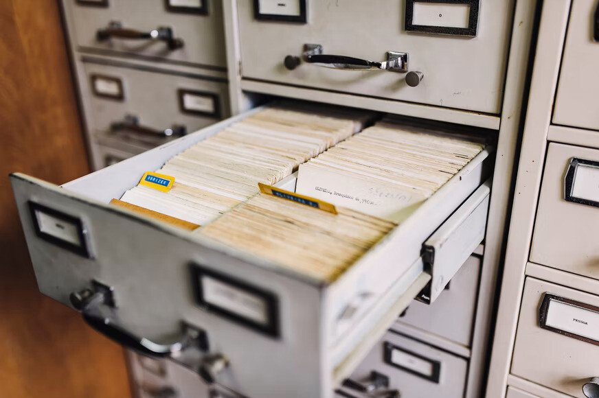

BOM VAMOS COMEÇA A NOSSA PRIMEIRA AULA DE "BANCOS DE DADOS"
Bom vamos la pessoal SEJA BEM VINDOS a nossa aula de um ASSUNTO DIFERENTE mais voçe ai deve esta se pergutando como assim nycolas a aula de um assunto diferente isso mesmo pessoal a aula de hoje na verdade NAO SO HOJE MAIS TAMBEM POR UM TEMPO ai voçe deve esta se pergutando novamente mais nycolas cade as aula de "HTML E CSS" bom pessoal nos iremos começa um assunto totalmente diferente que voçes nunca tinha visto OU ATE MESMO ja viram mais deve ter gente que nunca viu ou ja viu e nao esta aprendendo esse assunto maia bom o assunto que vamos aprender por um tempo mais voçe deve esta se pergutando mis porque nycolas por um TEMPO bom eu estou aprendendo um assunto novo ah mais voçe deve esta se pergutando que assunto nycolas BOM O ASUNTO QUE ESTOU APRENDENDO AGORA E BANCO E DADOS e um assunto um pouco meio CHATO KKK na verdade eu nao sei nada sobre ele por isso eu vou trabalhar um pouco ele ate porque eu pretendo trabalhar com isso certo? entao se eu trabalhar um pouco desse assunto eu irei fica sabendo um pouco certo mais bom pessoal eu nao irei deixa de estudar o HTML E CS NAO OK ate porque eu irei so deixa por um tempo de estduda o HTML E CSS pra poder saber desse assunto que e bancos de dados mais bom pesoal e isso e outra coisa tambem eu NAO o quero estuda soeses dois assunto ok tem varios assuntos que eu quero estudar so eles "JAVA SCRIPT, PHP, ETC..." e entre outros ok mais bom pesoal eu esppero que voçe entenda ok pois nos iremos fazer uma jornada desse assunto que falm que e bem chato mai nois iremos aprender e outra voçe deve esta se pergutando nos iremos aprender com quem esse assunto novo? ele msmo "GUSTAVO GUANABARA" nos iremos assistir algumas aulas ou melhor uma jornada de aulas kkk que o nosso profesor tem sao 19 videos desse assunto ok mais NAO so iremos so aprender com o nosso professor mais tambem nos iremos vr em outros professores sobre esse assunto que bm chatinho mais im nos iremos ver passo a passo no caso no caso do "ZERO" ate o "PRO" irei fala assim ok mais bom vamos la começa essa jornada que vai bem legal certo e outra coisa pode fica tranquilo que eu irei fala aqui tambem o que o nosso professor esta explicando ouuuu voçe pode como eu sempre fao "ENTRE NO YOUTUBE EPESQUISE POR GUSTAVO GUANABARA MYSQL" ok que la voçe pode entendr melhor certo mais bom vamos la nos iremos agora começa essa jornada dese assunto certo entao lst goooooo!
mais bom pesoal como eu ja falie ne nos iremos começa a ver uma jornada de BANCO DE DADOS ok e outra coisa nos iremos tambem baixar APPS que nos iremos ultilizar nesse asunto certo mais pode fica tranquilo que eu irei ensina pra voçes como baixar ok e tambem usar na verdade quem vai encinar e o nosso professor e outra coisa eu irei colocar tambem o video que se voçe ai do outro lado da tela qur assistoir o video sem precisar sai do site eu irei deixa o video ok sera basicamente a mesma soiaa que eu fazia no outro asunto que eu irei fazer nesse assunto tambem ok que e um asuto novo certo mis bom vamo la nos iremos começa antes de tudo pra poder começa a entender tudo certo que nos iremos aprender nessa aula agora "O QUE E BANCOS DE DADOS" ouuuu " A ORIGEM DE BANCOS DE DADOS" bom pra começa a entender entes de tudos nos iremos volta ao tempo la na decada 50 bom pra voçs que NAO sabem os computadores antigamente surgiram la na decada de 40 nos anos de 1945 ou 1946 ok entre essa fachetaria que como eu falei foi o surgimento militar para uso muilitar e academico ai voçe deve esta se pergutando ok nycolas mais como essa epoca como os dados foram guardados e isso que nos iremos ver isso agora que na verdade antes dos computadores os dados eram guardados em PAPEL sim isso mesmo ate porque ara a unica maneira da epoca e se voçe para pra pensar provavelmente tem gente uando iso ate hoje ne? so que vamos ver ne pessoal e um negocio muito velho se voçe ver como era guardados antigamente esse PAPEL era guardado em uma fixa e essa ficha era guardado em uma vou fala uma caixa na verdade nao era basicamente e um caixa mais sim em um arquivo metalico veja essa foto ai em baixo pra voçe ver o que sao xatamente um arquivo metalico veja!

bom eu falei literalmente eram guardados nessa caixa ai metalica ok mais hoje em dia nao se ua mais isso ate porque isso era usado atigamente apesar que tem gente usa ate mesmo os comercios alguns na verdade que issa isso pra poder guarda os bancos certo bom voltando pra nosa aula ate porque como era antigamente ra a unica maneira de "GUARDA OS DADOS" e seguindo essa teoria de guarda dados ou melhor banco de dados nos começamos essa jornada kkk e niso voçe vend esses tres vou fala componentes que sao ne A FICHA A PASTE E O ARMARIO nisso seguindo pra area de computadores hoje em dia tem um nome ESPECIFICO PRA ESSES TRES COMPONENTES que nos vamos ver agora SAO ELES "a ficha se chama agora registros" a pasta sao as tabelas" "e os armarios os aruivos" isso que u estou faando agor sao de hoje em dia que e no caso dentro com COMPUTADOR certo entao apenas recapitulando "OS ARMARIOS GRANDES QUARDA PASTA ESSA PASTA GUARDA FICHAS" agora vamos trazer na area de TI "OS ARQUIVOS GUARDA TEBELAS" " E TABELA ARMAZENA REGISTRO" guarda isso queisso ira ser muito importante quando nos comçamoa a ver no MYSQL que no caso como eu ja falie o app que iremos usar certo e se ver repara isso com ese acumulo e papel que era guardado antigamente era tudo rudado uma na outra fazendo aquela bagunça irei fala assim isso foi na decada e 50 certo ja na decada de 60 eles pensaram em coloca isso tudo pra um COMPUTADOR agora imagina o tanto de papel que tinha pra passa pelo COMPUTADOR? muitos ne kkkkk ate porque a computaçao ja começecou a ganhar o mundo nas empresas ne foi de apefeiçuando cada dia mais outra coia tambem antigamente os computadores eram enormes mis foi se diminindo com o tempo e nisso com o tempo foi passando assim foi passando tudo agora para a forma digital que era no caso os computadores mais calma que no começo nao foi muito bonito logo que surgiram banco de dados ok ate porque nos inicio que era no cas os registro era armazenado de uma maneira bem arcaica ou melhor diferente o que eles faziam eram pega uma ficha daquela e coloca uma apos a outra mais como assim nycolas isso mesmo um em cima da outra bem diferente isso tudo dentro de um arquivo sequencial nisso porque os arquivos antigamente eram guardadosem fitas magneticas ou cartoes perfurados e esse meio de armazenamento eram esseciais ate porque por exemplo " ah que quero ler o 4" nao era bem fail so assim che a e ler e tals voçe tinha que ler o 1 pra poder chega no 4 que era o que voçe queria nisso as ficha de papel e fita magnetica pra voçe a msma coia pra voçe chega no medio da folha voçe tnha quer ler diretamentedo começo e outra coisa tambem digamos que voçe esta com pressa e voçer quer encontra um arguivo ESPECIFICO pra voçe encontra esse arquivo voçe tinha que ver de "um por um" entao asim era bem cheto vo dizer assim e niso tem ate um nome que da a eses arquivo que se chama de "arquivo sequenciais" ate porque como eu acabei de fala os dados era guardados em uma seguencia certo? ah mais voçe deve esta se pergutando ah era tao ruim ter arquivos sequenciais maos para pra pensar era melhor do que tinha antes mais como assim nycolas isso mesmo pois como eu ja falei o 1 foi de ficha niso cok o tempo foi se passando foi surgindo o "DISCO, DISQUETES E HDS" e o melhor do disco que tipo voi cita o mesmo exemplo que eu acabdei de falei a cima "imagina que voçe tinha que acha um arquivo especifico e nisso com o "arquivos sequencias" voçe tinha que procura arquii por arquivo o DISCO ja e diferente voçe ja podia ir direto no arquivo que voçe esta pocurando bom ne o bom do disco e isso e nisso o arquivos tambem evoluiram pra iso mais como assim nycolas nesse macanismo de armazenamento ersa possivel guarda todos os registros e era tambem posovel guarda ou manter isso dentro e uma especifica tabela mas voçpe deve esta se pergutando nycolas eu nao estou entendendo mais calma esses arquivos com o tempo foram evoluindo que era posovel guarda em forma de NUMEROS ou INDICES niso a forma de encontra os dados foram mais rapidas vamo supor que eu queria pega o arquivo de numero 6 nisso era so procura o numero 6 e pega esse arquivo pra podr voçe fazer o seus dados nisso iso tambem tem um nome que se chama "ACESSO DIRETO" ta vendo que ficou facil resumindo tudo "arquivos de acesso sequencial= sao eles que onde os registros sao acessados sequencialmente" e s arquivo e acesso direto= sao eles que os registros sao armazenados e acesados e maneira direta" viu como e facil mais aina que os arquivos de acsso direto era melhor que os sequenciais porque esse indice era muito simplista era muito simples dai na decada de 60 como passa do tempo surgiu um momento muito importante para a historia de bancos de dados qu na decada de 60 onde os departamento de efesa dos stados unidos arregaçaram as mangas e dai foi onde eles começaram a trabalhar sim iso mesmo ate porque eles tinha uma maneira de armazena dados de maneira mais sgura inteligente
bom como eu ja falei irei colocar um VIDEO aqui pra voçe pode ENTENDER melhor que o nosso PROFESSOR esta EXPLICANDO E ENSINANDO A FAZER A MANUTENÇAO DO TEU SITE ok pessoal e isso por hoje e ate jaja ta certo tmj pessoal flw tropaaaa!